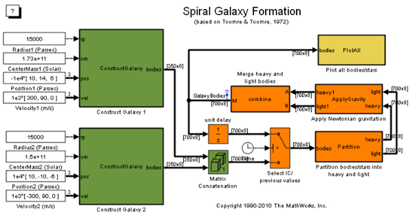
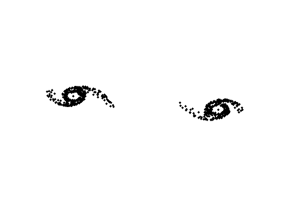

Embedded MATLAB® Function を使った螺旋状の銀河形成シミュレーション
このモデルは、有名な論文 "Galactic Bridges and Tails" (Toomre & Toomre 1972) に影響を受けて作られました。 この論文では、円盤型の銀河に渦巻腕ができる過程が説明されていました。 2 つの円盤型の銀河はもともと互いに遠く離れていました。 しかし、衝突しそうなほど互いに接近しました。 銀河が互いに接近すると、相互重力がはたらいて渦巻腕が形成されます。
"PlotAll" 可視化ブロックでプロット ルーチンが使用されることを別にすれば、このモデル内のすべての Embedded MATLAB® 関数ブロックで、Real-Time Workshop® と Real-Time Workshop® Embedded Coder™ を使用したコード生成がサポートされています。
- デモの要件: このデモの実行中、現在の作業ディレクトリ (pwd) 内に作成された Simulink プロジェクト ディレクトリにシミュレーションのコードが生成されます。 現在のディレクトリに影響を与えたくない (またはこのディレクトリにファイルを生成できない) 場合は、作業ディレクトリを変更する必要があります。
目次
モデルを開いてシミュレーションを実行
モデルを開き、以下のコードを実行することによってシミュレーションを実行します。 MATLAB® ヘルプを使用している場合は、実行するコードを選択し、F9 を押します (またはコードを選択し、右クリックして [選択を実行] をクリックします)。 Simulink モデルが読み込まれ、コンパイルされ、実行されます。
model = 'sldemo_eml_galaxy';
open_system(model);
sim(model);
  モデルの説明
この節では、このモデルについて詳述し、このモデル内の各ブロックの役割を説明します。 緑色のブロックの役割はシミュレーションの初期化です。オレンジ色のブロックはシミュレーションの中核です。黄色のブロックの役割は銀河アニメーションの表示です。
初期条件
このモデルでは、各銀河に初期条件が必要です。 これらの初期条件は、 銀河の半径がパーセク (rp)、質量が太陽質量単位 (cm)、位置がパーセク (pos)、速度が m/ 秒 (vel) として与えられます。
このモデルでは、Constant ブロックで初期条件が指定されます。 初期条件は、ある時点で銀河が互いに衝突しそうなほど接近するように選択されています。
"ConstructGalaxy" ブロック
初期条件は Embedded MATLAB 関数ブロック Construct Galaxy 1 および Construct Galaxy 2 に渡されます。これらの Embedded MATLAB 関数ブロックには、銀河モデルを作成する MATLAB コードが含まれています。
典型的な銀河では、質量の大半がその中心部に集中し、超大質量ブラック ホールまたは星の凝集 (あるいはその両方) を形成しています。 私たちは銀河を、半径が r で大半の質量が半径 r/3 の内円に集中している円盤状のものとしてモデル化しています。この超大質量の中心核に加えて、"ConstructGalaxy" Embedded MATLAB 関数ブロックでは、太陽質量が 4 ～ 24 のランダムな星が 349 個作成されます。 これらの星は、銀河の中心から r/3 ～ r の範囲内にランダムに配置されます。 これらの星は最初、銀河の中心核を中心とする円軌道上を進んでいます。 各オブジェクト (星または銀河の中心核) には、質量、位置 (x、y、z)、速度 (Vx、Vy、Vz) が設定されています。
"Matrix Concatenation" ブロック
このブロックでは、両方の銀河に関する情報が結びつけられます。 この時点で、このモデルには 750 個のオブジェクトがあります。 中心核が各銀河に 1 個、星が 各中心核の周囲に 349 個あります。 これら 750 個のオブジェクトの相互作用は、ニュートン力学に基づいています。
"Partition" ブロック
この Embedded MATLAB 関数ブロックにより、750 個すべてのオブジェクトが、 重量体と軽量体という 2 つのグループに分けられます。 重量体は銀河の中心核です。 軽量体は星です。 銀河の中心核と個々の星とでは質量に大きな差があるため、このモデルでは、重量体と重量体、重量体と軽量体との相互作用のみが考慮されます。 軽量体どうしの相互作用は無視できます。 そうすることで時間を大幅に節約できます。750 個のうち 748 個が軽量体であるからです。
"ApplyGravity" ブロック
この Embedded MATLAB 関数ブロックでは、各ステップで物体の速度および位置の計算にニュートン力学が使用されます。 "combine" ブロックも Embedded MATLAB 関数ブロックです。 重量体と軽量体に関するデータがマージされます。
"PlotAll" ブロック
この Embedded MATLAB 関数ブロックでは、シミュレーションの各ステップで物体が Figure にプロットされ、各星の位置が更新されます。
モデルを閉じる
変更内容を保存せずにモデルを閉じます。 シミュレーションやデモによって生成されたデータを消去します。
close_system(model,0); clear model sldemo_eml_galaxy_output;
メモ:
- このモデルでは、信号ログがオンになっています ([GalaxyBodies] 信号とその隣の小さな青い矢印を参照)。 このモデルでは、出力データが Simulink.ModelDataLogs 構造体に保存されます。 その他のデータで MATLAB ワークスペースをあふれさせることがないように、モデル ワークスペースで保存、変更されます。
- 信号ログ設定を変更するには、信号の行を右クリックし、[信号プロパティ] をクリックします。 このデモでは、信号名は [GalaxyBodies] であり、[信号データのログ] チェック ボックスがオンになっています。
- ログが作成された信号は、MATLAB ワークスペースに [sldemo_eml_galaxy_output] として保存されます。 これは Simulink.ModelDataLogs データ構造体です。 [GalaxyBodies] 信号は、sldemo_eml_galaxy_output.GalaxyBodies と入力することによって、この構造体から取得できます。 データ構造体の取り扱いの詳細は、MATLAB Help 『構造体配列内のデータへのアクセス』を参照してください。
このモデルに関するコメント
このモデルは単純ですが、私たちの銀河が進化した過程についての洞察を与えてくれます。 このデモを使用すると、このモデルを可能な限り単純化し、シミュレーションを短時間で実行することができます。 銀河を追加してデモを変更するのも簡単です。
参照
Toomre, Alar; Toomre, Juri; "Galactic Bridges and Tails"; Astrophysical Journal, Vol. 178, pp. 623-666 (1972); 12/1972;